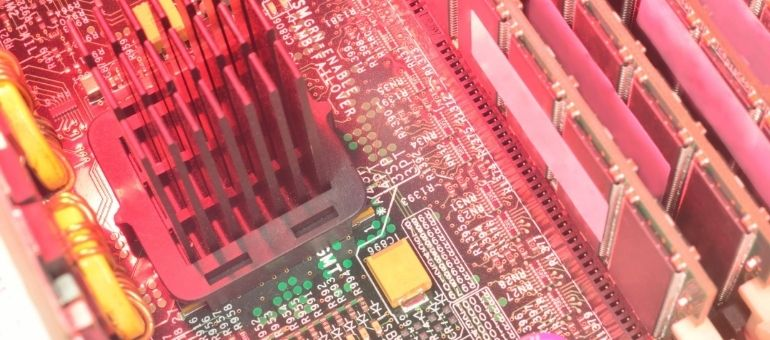

CONSIGLI UTILI
4 modi per raffreddare il tuo portatile.
In questi caldi giorni avrai sicuramente notato che il tuo portatile tende a surriscaldarsi più velocemente del solito quindi ho deciso di portarvi i 4 migliori modi per mantenere il tuo notebook a basse temperature!
NB:All’interno dell’articolo sono linkati prodotti che vi consiglio di acquistare.Se siete interessati all’acquisto fatelo attraverso il link, in questo modo aiutereste la crescita di technologized.it ! (L’acquisto attraverso il nostro link di affilazione non vi comporta nessun sovraccosto)
PERCHÈ NON FAR SURRISCALDARE IL TUO NOTEBOOK?
Il surriscaldamento di un computer portatile provoca danni all’hardware irreparabili, i compontenti più a rischio sono la CPU e la Scheda Madre che potrebbero smettere di funzionare improvvisamente. Oltre ai danni recati ai componenti va sottolineato che un computer sempre ad alte temperatura avrà delle prestazioni inferiori e il rumore delle ventole che cercano di buttare fuori il calore interno può essere molto fastidioso. Quindi per non compromettere la longevità del tuo personal computer e avere le massime prestazioni non ti resta che seguire questi piccoli consigli che troverai di seguito elencati.
PULISCI IL TUO COMPUTER
Una delle principali cause del surriscaldamento dei portatili è sicuramente la polvere che si accumula all’interno con il passare del tempo.
La polvere “soffoca” i vari componenti non permettendo la corretta aerazione e potrebbe anche ostacolare il funzionamento delle ventole che hanno il compito di buttare fuori il calore prodotto.
Pulire un portatile è abbastanza semplice e alla portata di tutti, ti basta avere una semplice bomboletta ad aria compressa che potrai acquistare per solo 7,89€ da qui.
Una volta acquistata dovrai semplicemente comprimere l’aria sui tasti della tastiera del tuo computer e su tutte le entrate (usb, carica batterie, hdmi …).

UTILIZZA UNA BASE DI RAFFREDDAMENTO
La base su cui è poggiato il tuo computer influisce e non di poco sulla temperatura.
Generalmente consiglio di non poggiarlo mai su superfici di stoffa perchè faranno surriscaldare il portatile dopo pochi minuti.
Un gadget che credo sia indispensabile per ogni possessore di laptop è una base di raffreddamento dotata di ventole che manterranno il tuo computer a basse temperature.
Io ho di recente acquistato questa base per soli 14,77€ e posso assicurarvi che da quel momento il mio computer non ha più avuto surriscaldamenti nemmeno nelle sezioni più intense!

DISATTIVARE L’OVERCLOCKING
In questi giorni cosi’ caldi avere scheda grafica o CPU spinte al massimo sicuramente non aiuterà molto quindi vi consiglio di disattivare qualsiasi overcloacking fatto in precedenza.
MODALITA RISPARMIO ENERGETICO
Se il vostro computer è dotato di una modalità di risparmio energetico vi consiglio di attivarla se dovete semplicemente navigare su internet o fare altre attività leggere. In questo modo il vostro portatile non sfrutterà tutto il suo potenziale e si manterrà a temperature più basse.
IL MIO PARERE
Sicuramente la pulizia del computer attraverso una bomboletta di aria compressa e l’utilizzo di una base di appoggio vi permetterà di sfruttare il vostro computer al massimo delle prestazioni senza compromettere la sua longevità. Gli ultimi due consigli ( DISATTIVARE L’OVERCLOCKING -MODALITA RISPARMIO ENERGETICO ) non li considererei le soluzioni definitive perchè andrebbero a limitare la vostra esperienza e le potenzialità del computer stesso ma piuttosto li utilizzerei in casi di emergenza.